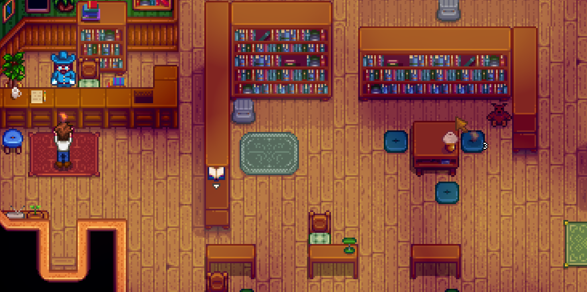
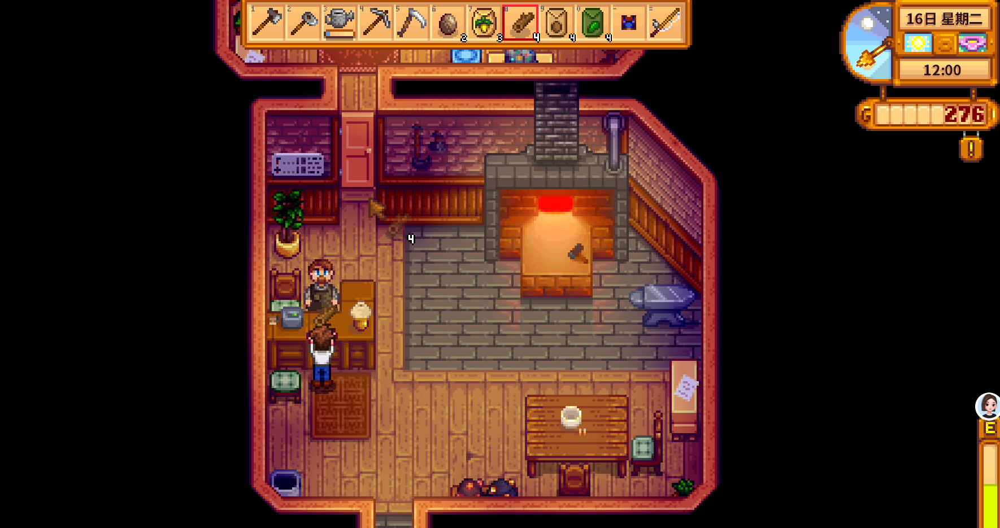
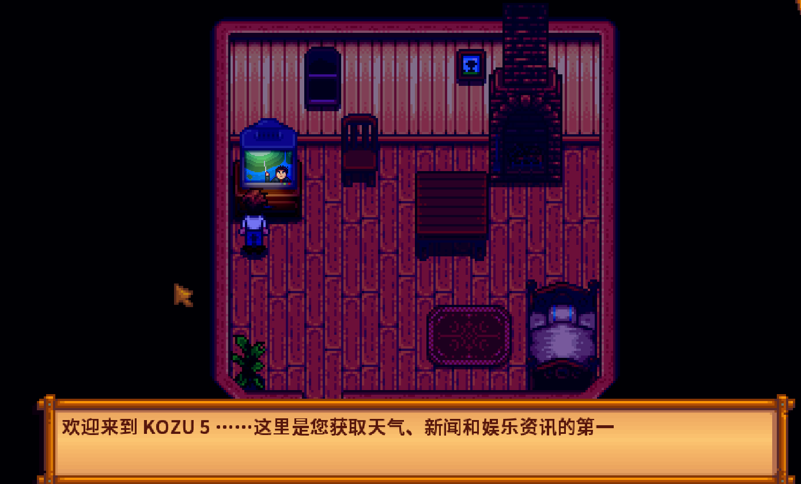

Quick answers (read this first)
- Museum / library sits in town (east side). Talk to Gunther at the counter to donate.
- Donate new artifacts and minerals. Duplicates can usually be sold later.
- Geodes open at Clint’s blacksmith—not at the museum counter.
- You do not need a complete museum in Year 1. Milestone rewards arrive as totals rise.
- Keep one “maybe museum” chest so you do not ship unique junk by accident.
Who this is for (and who should skip)
Use this if you found weird bones or minerals and are scared to sell them, or you opened geodes and have no idea what is new versus duplicate. Our Year 1 save shipped a suspicious bone before we learned about Gunther—we wrote this page so you can skip that panic.
Skip or skim if you already track museum completion percentages and run optimized donation routes. This is beginner donation hygiene, not a 100% completion spreadsheet.
Version note (Stardew Valley 1.6): Modern Stardew Valley keeps the museum and library as one building with Gunther at the counter. Reward milestones still unlock as your donated totals grow—check Gunther’s dialogue and the Collections tab in-game for your exact progress. We avoid inventing donation counts or reward thresholds here because those numbers are visible in your own save.
From our Year 1 save (real pitfalls):
- Shipped a bone to the bin before we met Gunther—couldn’t un-ship. Unknown artifacts go in a “museum maybe” chest first.
- Geodes open at Clint’s blacksmith, not at the museum counter. Crack → identify → donate new finds to Gunther.
- Empty display cases in Year 1 are fine; partial donations still count—check your Collections tab in-game for what’s missing.
Pros & cons of an early museum habit
| Details | |
|---|---|
| Pros | Steady rewards; cleans inventory; pairs with mining; builds “what is this item?” confidence. |
| Cons | Geode cracking costs gold; walking to town mid-day; easy to hoard trash “just in case.” |
| Use when | You have a few unknown minerals/artifacts after mine or forage days. |
| Skip when | You are Broke + Exhausted and still need seed money today. |
Personal tips from our Year 1 save
We placed a chest beside the farmhouse door for “museum maybe” items. Every odd rock, bone, or mineral went there before the shipping bin—that prevented accidental shipments Gunther would have accepted.
Geode cracking worked best as a batch errand on rainy Saturdays: mines, Clint, then Gunther in one walk. Empty display cases in Year 1 are fine; partial donations still count toward rewards, and the Collections tab shows what is missing.
Interactive checklist
Tick as you play. Session-only checkboxes—refresh clears them.
Safe to skip (anti-FOMO)
- Opening every geode the morning you need Summer seeds.
- Donating food crops (museum wants artifacts/minerals, not your blueberries).
- Filling the entire museum before Community Center Pantry progress.
- Buying Traveling Cart minerals at panic prices.
- Obsessing over which display case looks prettiest—function beats aesthetics in Year 1.
Decision table: keep, crack, donate, sell
| Item type | First action | Later |
|---|---|---|
| Geode (unopened) | Clint cracks it | Donate new insides; sell dupes |
| Artifact / bone you have not seen | Chest → Gunther | Keep 0–1 extras only if you like |
| Common stone / ore | Not museum | Ship or craft as usual |
| Duplicate mineral after donation | Sell or gift | Stop hoarding stacks |
Comparison table: donation trip styles
| Style | When it works | Trade-off |
|---|---|---|
| After every mine run | Short trips, small inventory | More walking; easy to forget other errands |
| Weekly batch (Saturday) | Stack geodes + combine Clint + Gunther | Unknowns sit in a chest for days |
| Rainy combo day | Mines → town without watering stress | Needs planning around weather |
| Year 2 catch-up | Ignore gaps until travel is easier | Delayed milestone rewards—not wrong, just slower |
Real screenshots from our Year 1 save

Game screenshot © ConcernedApe — used for guide commentary

Game screenshot © ConcernedApe — used for guide commentary

Game screenshot © ConcernedApe — used for guide commentary
How to run a donation errand (operations)
Eight steps we still follow after hundreds of in-game days:
- After a mine or forage day, sort your inventory before sleeping. Unknown artifacts and minerals go into the “museum maybe” chest—not the shipping bin.
- Check the Collections tab (optional) to see if anything you already own is still missing from the museum list.
- On a town-trip day, pack geodes separately from cracked minerals so Clint’s menu is obvious.
- Visit Clint’s blacksmith first if geodes are waiting. Pay to process them and note which results look new.
- Walk east to the museum/library. Gunther stands at the indoor counter—talk to him while holding a candidate item.
- Donate everything he accepts as new. The game tells you when an item is already donated; listen to that feedback.
- Sell or ship duplicates once you confirm the museum has one on display. Stop hoarding ten copies of the same quartz.
- Return to the farm loop. Museum runs are errands layered onto normal days—not a reason to skip watering or animal care.
Common mistakes
- Shipping the first artifact. If it looks unique—bones, strange dolls, unfamiliar minerals—chest it until Gunther confirms. You cannot un-ship.
- Expecting Gunther to open geodes. That is Clint’s job at the blacksmith. The museum counter is for identified donations only.
- Never donating because the museum feels incomplete. Partial donations still unlock milestone rewards over time. Sparse walls in Year 1 are normal.
- Hoarding dozens of the same mineral. One donated copy is enough for the collection; extras can fund seeds and tool upgrades.
- Museum runs while Exhausted. Combine donations with other town chores on one trip, or wait until you have energy to walk back safely.
Alternative variations
- Rainy batch day: Mines → Clint → museum in one loop while rain handles crops.
- Chest-only: Store all finds for a weekly Saturday donation trip—minimal daily distraction.
- Completionist later: Ignore rare collection holes until Year 2 when mine elevators and travel make hunting easier.
FAQ
Where is the museum?
In Pelican Town on the east side—the library building with the wooden sign out front. Gunther stands at the indoor counter near the bookshelves.
Should I donate everything shiny?
Donate new artifacts and minerals that Gunther accepts. Ordinary crops, fish, foraged berries, and tools are not museum donations—they belong in the shipping bin or your kitchen.
Do I need the museum for Community Center?
They are separate systems. Museum rewards help quality of life (like ore processing perks); Community Center bundles have their own rooms and item lists.
What if I already sold something Gunther wanted?
You can find most items again through mining, fishing treasure, or digging. Year 1 is long—one mistake is not a ruined save. Mark the gap in Collections and hunt later.
Does the 1.6 update change museum rewards?
Core donation flow is the same: give Gunther new artifacts and minerals, fill cases, earn milestones. If ConcernedApe tweaks dialogue or UI labels, trust the in-game prompt over any fan wiki screenshot from an older patch.
Next steps / related pages
Unofficial fan guide. Not affiliated with ConcernedApe.